爬虫又称网络爬虫，所以在讲解爬虫之前，我们有必要了解一下什么是网络？网络是由若干节点和连接这些节点的链路构成，然后网络与网络之间所串连成的庞大网络叫做互联网，而我们今天要讲的HTTP（HyperText Transfer Protocol 超文本传输协议)是互联网上应用最为广泛的一种网络协议，它是由万维网协会（World Wide Web Consortium）制定发布。
文章主要以一次HTTP请求的整个过程来讲解(DNS解析不讲)：HTTP起源、TCP/IP协议、建立TCP连接、客户端请求、服务端响应、断开TCP连接，文章最后还捎带讲了与HTTP相关知识。文章较长，建议收藏或转发后阅读！
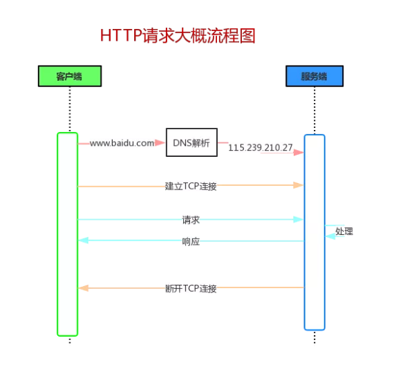
一、简介
1.起源
今天我们能够在网络中畅游，都得益于一位计算机科学家蒂姆·伯纳斯·李的构想。1991年8月6日，蒂姆·伯纳斯·李在位于欧洲粒子物理研究所（CERN）的NeXT计算机上，正式公开运行世界上第一个Web网站（http://info.cern.ch ），建立起基本的互联网基础概念和技术体系，由此开启了网络信息时代的序幕。
伯纳斯·李的提案包含了网络的基本概念并逐步建立了所有必要的工具：
提出HTTP (Hypertext Transfer Protocol) 超文本传输协议，允许用户通过单击超链接访问资源；
提出使用HTML超文本标记语言(Hypertext Markup Language)作为创建网页的标准；
创建了统一资源定位器URL (Uniform Resource Locator)作为网站地址系统，就是沿用至今的http://www URL格式；
创建第一个Web浏览器，称为万维网浏览器，这也是一个Web编辑器；
创建第一个Web服务器（http://info.cern.ch）以及描述项目本身的第一个Web页面。
2.特点
HTTP 协议一共有五大特点：
- 支持客户/服务器模式。
- 简单快速：客户向服务器请求服务时，只需传送请求方法和路径。
- 灵活：HTTP允许传输任意类型的数据对象。正在传输的类型由Content-Type（Content-Type是HTTP包中用来表示内容类型的标识）加以标记。
- 无连接：无连接的含义是限制每次连接只处理一个请求。服务器处理完客户的请求，并收到客户的应答后，即断开连接。采用这种方式可以节省传输时间。
- 无状态：无状态是指协议对于事务处理没有记忆能力，服务器不知道客户端是什么状态。即我们给服务器发送 HTTP 请求之后，服务器根据请求，会给我们发送数据过来，但是，发送完，不会记录任何信息（Cookie和Session孕育而生，后期再讲）。
二、TCP/IP协议
我们经常听到一句话就是：HTTP是一个基于TCP/IP协议簇来传递数据。
如何理解上面那句话？我们来看看TCP/IP四层模型就明白了。
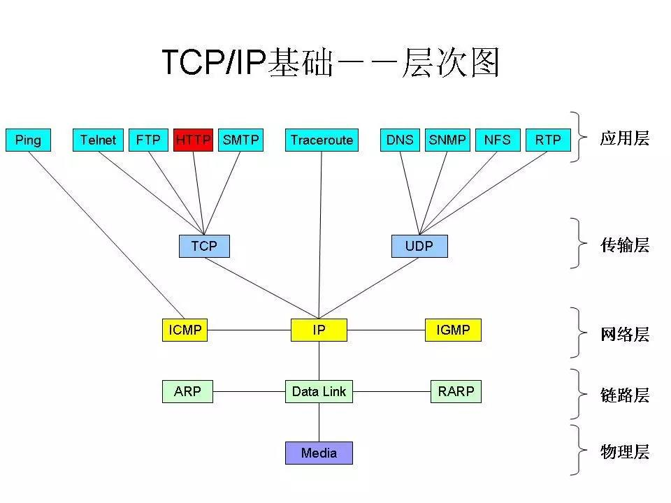
从上图我们可以清晰的看到HTTP使用的传输层协议为TCP协议，而网络层使用的是IP协议（当然还使用了很多其他协议），所以说HTTP是一个基于TCP/IP协议簇来传递数据。
同样我们可以看到ping走的ICMP协议，这也就是为什么有时候我们开vps可以上网，但是ping google却ping不通的原因，因为走的是不同的协议。
那TCP/IP协议簇大致是如何工作的，我们再来看看下图：
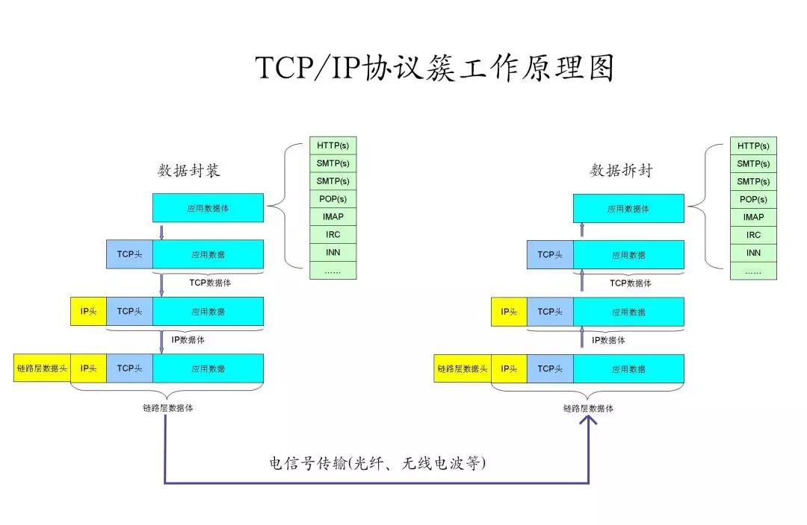
我们可以看到在数据发送端是一层一层封装数据，数据接收端一层一层拆封，最后应用层获得数据。
三、建立TCP连接
我们知道了TCP/IP协议簇大致的工作原理之后，我们来看看HTTP是如何建立连接的。
1.TCP包头信息
前面咱们讲过HTTP是一个基于TCP/IP协议簇来传递数据，所以这HTTP建立连接也就是建立TCP连接，TCP如何建立连接，一起来看看TCP包信息结构吧。
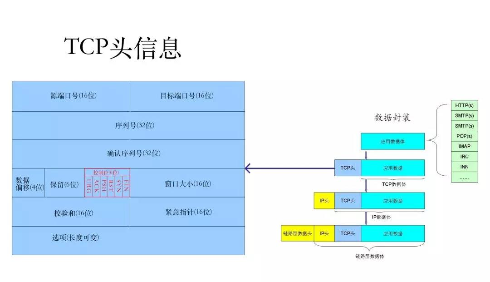
TCP报文包=TCP头信息+TCP数据体，而在TCP头信息中包含了6种控制位（上图红色框中），这六种标志位就代表着TCP连接的状态：
URG：紧急数据（urgent data）—这是一条紧急信息
ACK：确认已收到
PSH：提示接收端应用程序应该立即从tcp接受缓冲区中读走数据
RST：表示要求对方重新建立连接
SYN：表示请求建立一个连接
FIN：表示通知对方本端要关闭连接了
2.建立连接过程
了解了TCP包头信息之后，我们就可以正式看看TCP建立连接的三次握手了。
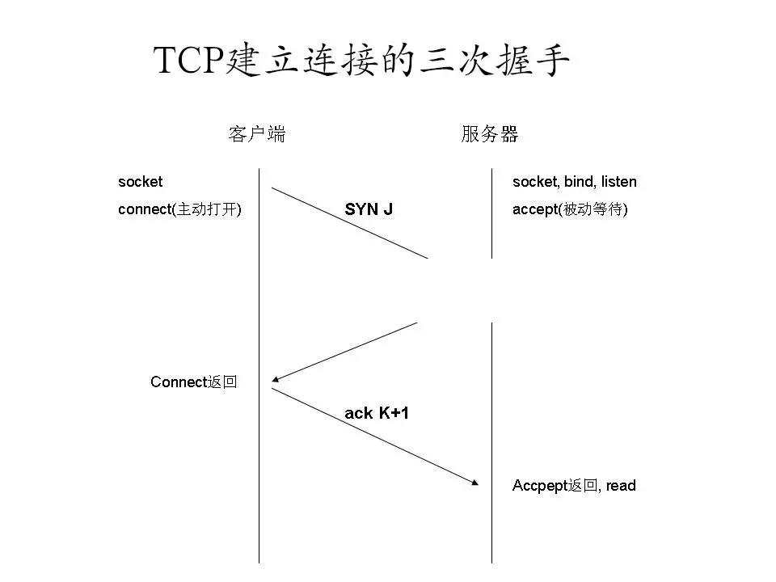
三次握手讲解：
客户端发送位码为syn＝1,随机产生seq number=1234567的数据包到服务器，服务器由SYN=1知道客户端要求建立联机（客户端：我要连接你）
服务器收到请求后要确认联机信息，向A发送ack number=(客户端的seq+1),syn=1,ack=1,随机产生seq=7654321的包（服务器：好的，你来连吧）
客户端收到后检查ack number是否正确，即第一次发送的seq number+1,以及位码ack是否为1，若正确，客户端会再发送ack number=(服务器的seq+1),ack=1，服务器收到后确认seq值与ack=1则连接建立成功。（客户端：好的，我来了）
面试官：为什么http建立连接需要三次握手，不是两次或四次
答：三次是最少的安全次数，两次不安全，四次浪费资源
四、客户端请求
客户端与服务器连接上了之后，客户端就可以开始向服务器请求资源，就可以开始发送HTTP请求了。
1.HTTP请求报文结构
我们之前说过TCP报文包=TCP头信息+TCP数据体，TCP头信息我们已经讲了，现在来讲TCP数据体，也就是我们的HTTP请求报文。
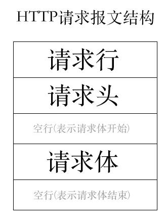
2.HTTP请求实例
来看看实际的HTTP请求例子：
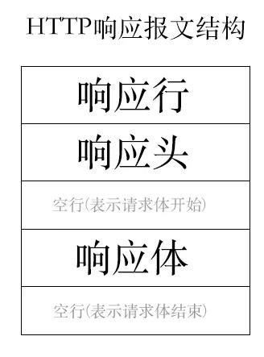
①是请求方法，HTTP/1.1 定义的请求方法有8种：GET、POST、PUT、DELETE、PATCH、HEAD、OPTIONS、TRACE,最常的两种GET和POST，如果是RESTful接口的话一般会用到GET、POST、DELETE、PUT
②为请求对应的URL地址，它和报文头的Host属性组成完整的请求URL
③是协议名称及版本号
④是HTTP的报文头，报文头包含若干个属性，格式为“属性名:属性值”，服务端据此获取客户端的信息
⑤是报文体，它将一个页面表单中的组件值通过param1=value1¶m2=value2的键值对形式编码成一个格式化串，它承载多个请求参数的数据。不但报文体可以传递请求参数，请求URL也可以通过类似于“/chapter15/user.html? param1=value1¶m2=value2”的方式传递请求参数。
请求头参数非常多，猪哥就不一一说明，只说明两个低级的反扒参数：
User-Agent：客户端使用的操作系统和浏览器的名称和版本，有些网站会限制请求浏览器
Referer：先前网页的地址，表示此请求来自哪里，有些网站会限制请求来源
五、服务端响应
服务器在收到客户端请求处理完需要响应并返回给客户端，而HTTP响应报文结构与请求结构体一致。
1.HTTP响应报文结构
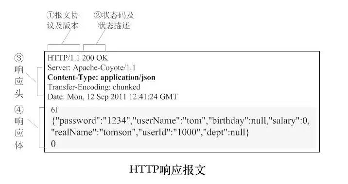
2.HTTP响应实例
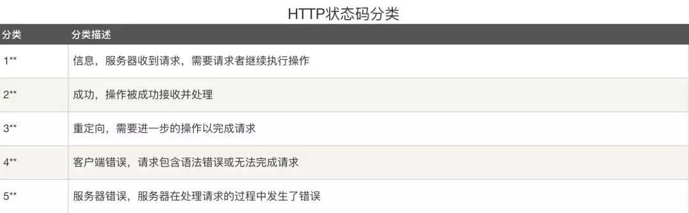
3.响应状态码
响应报文中我们重点关注下：服务器的响应状态码，面试也很容易问到，下面猪哥只列出分类，详细状态码自行上网查找了解。
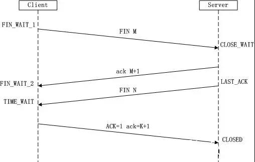
六、断开连接
在服务器响应完毕后，一次会话就结束了，请问这时候连接会断开吗？
1.长短连接
是否断开我们需要区分HTTP版本：
在HTTP/1.0版本的时候，客户端与服务器完成一个请求/响应之后，会将之前建立的TCP连接断开，下次请求的时候又要重新建立TCP连接，这也被称为短连接
在HTTP1.0发布仅半年后（1997年1月） ，HTTP/1.1版本发布并带来一个新的功能：在客户端与服务器完成一次请求/响应之后，允许不断开TCP连接，这意味着下次请求就直接使用这个TCP连接而不再需要重新握手建立新连接，这也被称为长连接
注意：长连接是指一次TCP连接允许多次HTTP会话，HTTP永远都是一次请求/响应，会话结束，HTTP本身不存在长连接之说。
早在1999年HTTP1.1就推广普及，所以现在浏览器在请求时请求头中都会携带一个参数：Connection:keep-alive，这表示浏览器要求与服务器建立长连接，而服务器也可以设置是否愿意建立长连接。
2.长连接优缺点
对于服务器来说建立长连接有优点也有缺点：
优点：当网站中有大量静态资源（图片、css、js等）就可以开启长连接，这也几张图片就可以通过一次TCP连接发送。
缺点：当客户端请求一次时候不在请求，而服务器却开着长连接资源被占用着，这是严重浪费资源。
所以是否开启长连接，长连接时间都需要根据网站自身来合理设置。
ps：大家不要小看这一个TCP连接，在一次客户端HTTP完整的请求中（DNS寻址、建立TCP连接、请求、等待、解析网页、断开TCP连接）建立TCP连接占用的时间比还是很大的。
3.断开连接过程
在建立TCP连接时是三次握手，而断开TCP连接是四次挥手！
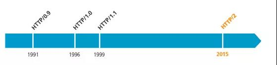
在前面讲TCP/IP协议时我们说过标志位：FIN表示通知对方本端要关闭连接了，那断开连接为何需要四次挥手呢？这里给大家的课后作业，可以在留言中给出你的理解，看看是否正确。
七、题外话
1.面试必考题：http三次握手、四次挥手
面试官：为何建立连接需要三次握手而关闭连接却需要四次挥手。给大家的课后作业，在留言中给出你的见解！
2.http2.0
图片描述
HTTP/1.1已经为我们服务了20年，而HTTP/2.0其实在2015就发布了，但是还没有推广开来，关于HTTP/2.0新特性大家也可以去网上查阅相关资料
3.http&rpc
因为http响应慢、请求头体积大等缺点，所以在微服务时代，大家都使用rpc来调用服务，rpc相关概念感兴趣同学自行网上学习。
4.http&https
http还有两个很大的缺点就是明文且不能保证完整性，所以目前会渐渐被HTTPS代替，HTTPS知识猪哥下期将会为大家讲解。
原文地址和作者信息
作者：猪哥66
链接：https://www.imooc.com/article/287873
来源：慕课网
本文原创发布于慕课网 ，转载请注明出处，谢谢合作
八、补充
TCP关闭连接过程：
1.Client向Server发送FIN包，表示Client主动要关闭连接，然后进入FIN_WAIT_1状态，等待Server返回ACK包。此后Client不能再向Server发送数据，但能读取数据。
2.Server收到FIN包后向Client发送ACK包，然后进入CLOSE_WAIT状态，此后Server不能再读取数据，但可以继续向Client发送数据。
3.Client收到Server返回的ACK包后进入FIN_WAIT_2状态，等待Server发送FIN包。
4.Server完成数据的发送后，将FIN包发送给Client，然后进入LAST_ACK状态，等待Client返回ACK包，此后Server既不能读取数据，也不能发送数据。
5.Client收到FIN包后向Server发送ACK包，然后进入TIME_WAIT状态，接着等待足够长的时间（2MSL）以确保Server接收到ACK包，最后回到CLOSED状态，释放网络资源。
6.Server收到Client返回的ACK包后便回到CLOSED状态，释放网络资源。
为什么要四次挥手？
TCP是全双工信道，何为全双工就是客户端与服务端建立两条通道，通道1:客户端的输出连接服务端的输入；通道2:客户端的输入连接服务端的输出。两个通道可以同时工作：客户端向服务端发送信号的同时服务端也可以向客户端发送信号。所以关闭双通道的时候就是这样：
客户端：我要关闭输入通道了。
服务端：好的，你关闭吧，我这边也关闭这个通道。
服务端：我也要关闭输入通道了。
客户端：好的你关闭吧，我也把这个通道关闭。